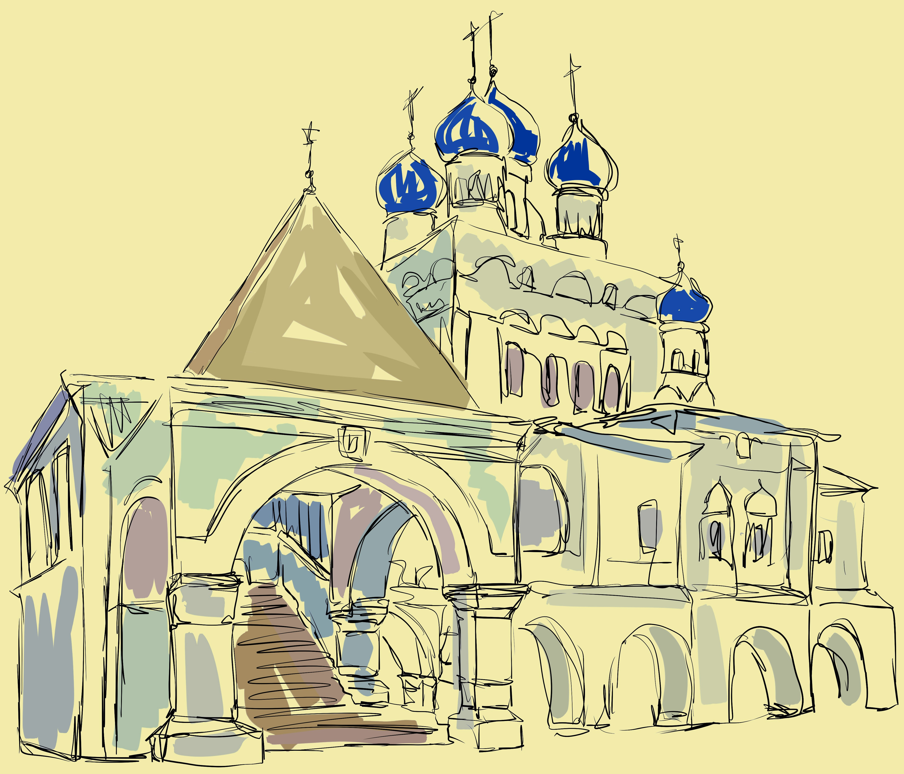

 ХРАМ КАЗАНСКОЙ ИКОНЫ БОЖИЕЙ МАТЕРИ В КОЛОМЕНСКОМ — ЕДИНСТВЕННАЯ ПОСТОЯННО ДЕЙСТВУЮЩАЯ ЦЕРКОВЬ В ПАРКЕ КОЛОМЕНСКОЕ. ЗДАНИЕ ПРЕДСТАВЛЯЕТ СОБОЙ ТИПИЧНЫЙ ОБРАЗЕЦ АРХИТЕКТУРЫ XVII ВЕКА — НА ВЫСОКОМ ПОДКЛЕТЕ, ОКРУЖЕННЫЙ ГАЛЕРЕЕЙ, С ШАТРОВЫМ КРЫЛЬЦОМ И ШАТРОВОЙ КОЛОКОЛЬНЕЙ.
ДЕРЕВЯННЫЙ ХРАМ ВО ИМЯ КАЗАНСКОЙ ИКОНЫ БОЖИЕЙ МАТЕРИ НА ГОСУДАРЕВОМ ДВОРЕ В КОЛОМЕНСКОМ БЫЛ ПОСТРОЕН ПРИ ЦАРЕ МИХАИЛЕ ФЕДОРОВИЧЕ В 1630-Х ГГ. В 1649 ГОДУ В СВЯЗИ С РОЖДЕНИЕМ НАСЛЕДНИКА ПРЕСТОЛА ДМИТРИЯ АЛЕКСЕЕВИЧА БЫЛО УСТАНОВЛЕНО ОБЩЕЦЕРКОВНОЕ ПОЧИТАНИЕ КАЗАНСКОЙ ИКОНЫ БОЖИЕЙ МАТЕРИ. ТОГДА ЖЕ БЫЛИ ЗАЛОЖЕНЫ КАМЕННЫЕ КАЗАНСКИЕ ЦЕРКВИ В ЯРОСЛАВСКОМ КАЗАНСКОМ МОНАСТЫРЕ И ПРИ ЦАРСКОМ КОЛОМЕНСКОМ ДВОРЦЕ. СТРОИТЕЛЬСТВО СУЩЕСТВУЮЩЕГО В КОЛОМЕНСКОМ КИРПИЧНОГО ЗДАНИЯ НА ВЫСОКОМ ПОДКЛЕТЕ С ШАТРОВОЙ КОЛОКОЛЬНЕЙ БЫЛО ЗАВЕРШЕНО ЗА ЧЕТЫРЕ ГОДА В 1651 Г. ВЗАМЕН ДЕРЕВЯННОГО БЫЛО ПОСТРОЕНО НЫНЕ СУЩЕСТВУЮЩЕЕ КИРПИЧНОЕ ЗДАНИЕ ХРАМА.
ХРАМ ПОСВЯЩЕН ОДНОЙ ИЗ НАИБОЛЕЕ ПОЧИТАЕМЫХ В РОССИИ ИКОН БОГОМАТЕРИ – КАЗАНСКОЙ, С ЧУДЕСНЫМ ЗАСТУПНИЧЕСТВОМ КОТОРОЙ СВЯЗЫВАЛИ СВОЕ ИЗБРАНИЕ НА ЦАРСТВО ГОСУДАРИ ИЗ РОДА РОМАНОВЫХ.
РАСПОЛОЖЕННЫЙ В ЦЕНТРЕ ГОСУДАРЕВА ДВОРА ХРАМ СЛУЖИЛ ДОМОВОЙ, СЕМЕЙНОЙ ЦЕРКОВЬЮ ДЛЯ ЖИВШИХ ЗДЕСЬ ЦАРСТВЕННЫХ ОСОБ.С БОЛЬШИМ ДЕРЕВЯННЫМ ДВОРЦОМ ЦАРЯ АЛЕКСЕЯ МИХАЙЛОВИЧА, ПОСТРОЕННОМ В 1667 ГОДУ, ХРАМ СОЕДИНЯЛСЯ ЗАКРЫТОЙ ГАЛЕРЕЕЙ-ПЕРЕХОДОМ. С ПЕРЕНОСОМ ЦАРСКОГО ДВОРЦА НА НОВОЕ МЕСТО В 60-Е ГОДЫ XVIII ВЕКА ЦЕРКОВЬ СТАНОВИТСЯ ПРИХОДСКИМ ХРАМОМ КОЛОМЕНСКОГО. В НАСТОЯЩЕЕ ВРЕМЯ В ХРАМЕ КАЗАНСКОЙ ИКОНЫ БОЖИЕЙ МАТЕРИ КРУГЛОГОДИЧНО ПРОВОДЯТСЯ СЛУЖБЫ.